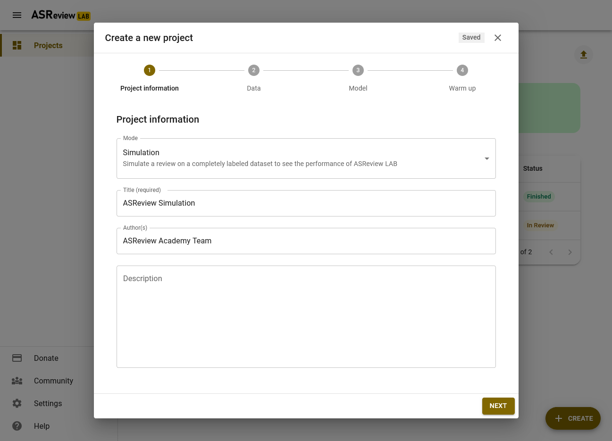
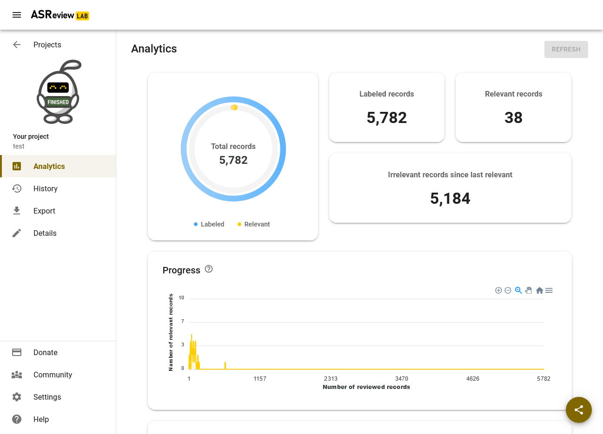
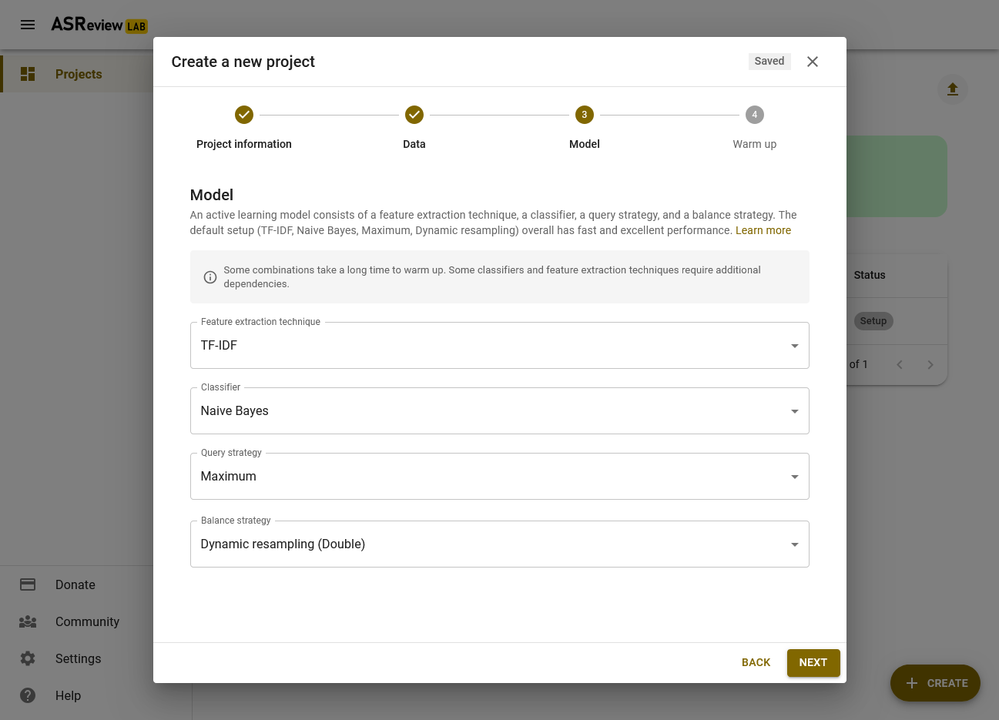
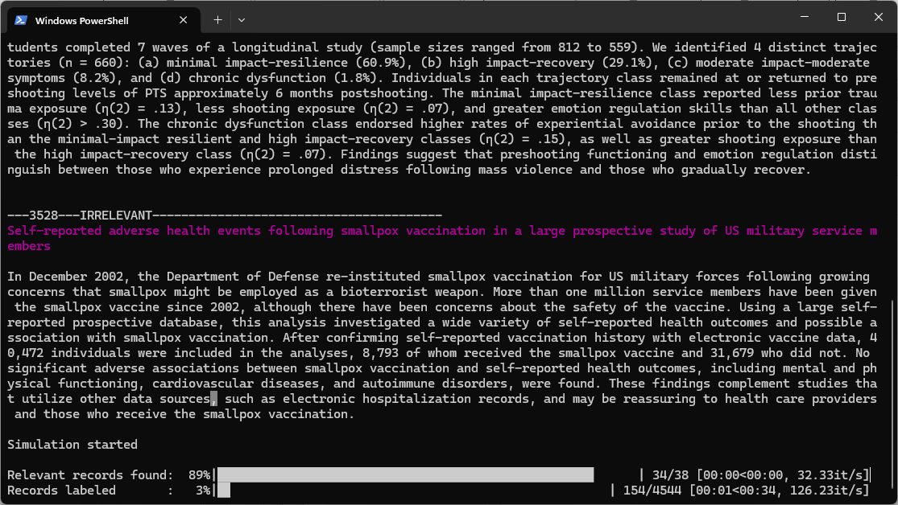

Introductory exercise on Using the ASReview Simulation Mode
Introduction
The goal of this exercise is to learn how you can perform simulations on a labeled systematic review dataset using the web browser of ASReview, the command line interface, and the package titled Makita.
A simulation in the context of AI-assisted reviewing involves mimicking the screening process with a particular model. In a simulation setting, it is already known which records are labeled as relevant, and the software can automatically reenact the screening process as if a human were labeling the records in interaction with the Active Learning model. This allows you to answer questions about the (workings of) the model itself and compare the performance of different models under different circumstances. Read the documentation for more information about running simulations.
If writing scripts and running simulations is new to you, don’t worry, you can make it as simple or complicated as you want.
In this exercise, you will learn how to prepare, run, and interpret the results of a simulation yourself. You will first do this using the web browser with the click-and-run interface you know from the first exercise. Then you will be guided through the same process in the command-line interface, which has more options than the LAB interface. Lastly, you will run the same simulations, this time using the Makita package. This package automates much of the process, which is great for large-scale simulation studies.
Enjoy!
Conducting a simulation via the web browser
To start off easy, we will run a simulation study using the PTSD benchmark dataset we also used in the introductory exercise.
For this exercise, we assume you have already installed Python and the ASReview LAB application. If you haven’t done so yet, you can follow the instructions on installation.

- Open ASReview LAB with the terminal and start a new project using ‘
Simulation’ mode. Follow the steps described in the documentation, and select thevan de Schoot et al. (2017)PTSD Trajectories benchmark dataset.
Add these five prior relevant studies:
Latent trajectories of trauma symptoms and resilience: the 3-year longitudinal prospective USPER study of Danish veterans deployed in Afghanistan
A Latent Growth Mixture Modeling Approach to PTSD Symptoms in Rape Victims
Peace and War: Trajectories of Posttraumatic Stress Disorder Symptoms Before, During, and After Military Deployment in Afghanistan
The relationship between course of PTSD symptoms in deployed U.S. Marines and degree of combat exposure
Trajectories of trauma symptoms and resilience in deployed US military service members: Prospective cohort study
Now, also choose five (random) prior irrelevant papers and copy-paste the selected irrelevant titles to a separate file. We will use the same studies later!
Continue to the next screen, Keep the default models and initiate the simulation by clicking “NEXT”.
After Warming up the AI is done, click on GOT IT. Proceed to the Analytics page and check if the simulation study has finished. ELAS is holding a card with the status of your project. If your simulation is not finished yet, click the REFRESH button in the upper right corner.

Note: it can be that running the simulation takes a long time because of the size of your dataset in combination with the chosen model. To give you an idea of the possible differences in runtime between models, see Table 1 on page 15 of Teijema et al. (2022). Training the feature matrix for a dataset with 15K records took .23 seconds with TF-IDF, but 6 hours with sBert.
When the simulation is done, save the recall plot on your laptop. For instructions on how to do this, see the documentation.
Woohoo! You just performed a simulation study! Easy right?
Let’s do some more:

Start a new project (use a different name), add the same dataset, and add the same relevant and irrelevant articles as priors but this time choose a different classification model such as Random Forest or Logistic Regression. Run the simulation study and save the recall plot.
Repeat the same process, but now choose a different feature extractor, query strategy or balancing strategy. Run the simulation and save the recall plot.
Compare the three recall plots. What is your conclusion in terms of performance for the three different models? You might observe some differences in how long it takes each model to arrive at the total number of relevant records found.
Many papers have been written about such comparisons; for an overview of such comparisons, see the systematic review on this topic.
Conducting a simulation via the command line interface
Step 1: Choose a research question
Many more options for the configuration are available via the command line interface. This is useful because 1001 questions can be answered by running a simulation study and every simulation study requires slightly different settings. As example, we will work on three example questions.

In the second part of the exercise, you will also be introduced to some performance metrics that you can use to assess the performance of your model.
Research questions:
- When using AI-aided screening to find 95 percent of the relevant records, how much time did I save compared to random screening?
This question can be addressed by examining the Work Saved over Sampling (WSS) statistic at a recall of .95, which reflects the proportion of screening time saved by using active learning at the cost of failing to identify .05 of relevant publications.
- How much variation is there between three runs of the same model with different prior records selected for training the model?
This question can be addressed by running the exact same simulation three times, but with different prior knowledge selection. We introduce the metric the percentage of Relevant Records Found (RRF) at a given recall (e.g., after screening 10% of the total number of records).
- Does, for example, the classifier Naive Bayes (‘nb’) or Logistic Regression (‘logistic’) perform better for a given dataset, when keeping the other settings fixed? For this question, we introduce the metrics the Extra Relevant Records found (ERF) and the Average Time to Discovery (ATD).
To keep your results organized, we suggest you fill out the table below with your simulation results for each model you run.
Step 2: Create a folder structure
We recommend you to create a designated folder to run a simulation in, to keep your project organised. Create a folder and give it a name, for example “Simulation_study_PTSD”. Within this folder, create two sub-folders called ‘data’ and ‘output’. Also using NotePad (on Windows) or Text Edit (on Mac/OS) to create an empty text file called jobs.txt in the main folder. This is where you will save the scripts you run. See the example below:

Step 3: Choose a dataset
Before we get started, we need a dataset that is already labeled. You can use a dataset from the SYNERGY dataset via the synergy-dataset Python package.
Open the terminal.
Navigate to the folder structure;
You can navigate to your folder structure with:
bash cd [file_path]
It’s also possible to open a terminal directly at the correct location.
For MacOS: 1. Right-click on created folder. 2. Click “New Terminal at Folder”. Then the data set will be automatically be put into the designated data folder. For Windows 11 (and sometimes 10): 1. Shift-right click inside the created folder. 2. Click on Open in Terminal
- Install the synergy-dataset Python package with: (This package will already be installed after installing ASReview, but better safe than sorry!)
bash pip install synergy-dataset
- Build the dataset.
To download and build the SYNERGY dataset, run the following command in the command line:
bash python -m synergy_dataset get -o data
You can also choose to use your own dataset. Do make sure that the dataset is fully labeled and prepared for simulation.
Step 4: Write and run the simulation script
Below you will find a step by step guide on how to run a simulation with the ASReview software. Depending on your research question, you will need to add or change things (e.g. run multiple simulations if you want to compare runs of the same model with different seeds or to compare different models question 2 and 3).
The parts between the brackets [ ] need to be filled out by you.
Open the Terminal
Navigate to the folder structure;
Run the simulation;
Now, we’re going to write the script to run your simulation, using the code below. You still need to fill out at least three pieces of information: the dataset’s name, the name of the output file and two seed values, to make the results reproducible. Some processes in ASReview require (pseudo-)random number generation. The user can give such a process a fixed “seed” to start from, which means the same sequence is generated each time, making any simulation reproducible. The --model_seed command controls the seed of the random number generation that is used after model initialization. The --init_seed command controls the random set of papers to train the model on.
bash asreview simulate data/[name_of_your_data.csv] --state_file output/[results_name].asreview --seed [your favorite number] --init_seed [your second favorite number]
Save this script in the jobs.txt file you just made, to keep track of which code you ran!
You can also decide to supply more arguments, for example to employ a different model or to specify prior knowledge yourself instead of using --init_seed to select random ones . If no prior knowledge is specified, one relevant and one irrelevant prior are randomly selected. If no model is specified, the software’s default active learning model is used.
Run the simulation by copy-pasting the code in the command line interface.
While your simulation is running, you can check whether the priors were correctly specified as they appear in the command prompt and you can stare at the progress bar.
Step 5: Obtaining a recall curve and the metrics
For the next steps, you first need to install some extra extensions. You can do so with:
bash pip install asreview-insights asreview-datatools asreview-makita
You can get the recall plot with this line of code:
bash asreview plot recall output/[results_name].asreview -o output/results.png
Run the code in the CLI (and put it in your jobs.txt file).
The plot file will appear in your output folder. Inspect the recall curve from the asreview-insights extension. It should look something like the figure below.
You can get the metrics with:
bash asreview metrics output/[results_name].asreview -o output/output.json
The output will appear in your command prompt and will be saved in the ‘output.json’ file in your output folder. You can scroll up in your CLI or open the file with a text editor like Notepad (or R, Python, or a Jupiter Notebook) to look at the metrics we got from the asreview-insights.
Fill out the performance statistics in your table under model 1. But what do those statistics mean? Check out the readme of the Insights packages.
Research Question 1
To answer research question 1, look at the WSS@95 statistic, reflecting the proportion of records you did not have to screen by using active learning compared to random reading, at the cost of failing to identify .05 of relevant publications. In the above example, we did not have to screen 65% of the records to find 85% of relevant records in the dataset.
Research Question 2
To answer research question 2, you can rerun the same model once more with a different value for --init_seed. A different seed value will result in a different selection of prior knowledge.
Make sure to store the results under a different name and write the results in your table under Model 2.
Can you confirm that the model used different prior knowledge in this run using the information printed in your console?
Then, run the model a third time (Model 3), but this time specify a specific set of records to be used as training data by using the --prior_idx argument:
bash asreview simulate data/[name_of_your_data.csv] --state_file output/[results_name].asreview --seed [your favorite number] --prior_idx [row nr. relevant record] [row nr. irrelevant record]
You should search in the data to identify the row numbers of the records you want to use. Be aware we start counting row numbers at zero (and mind the column names).
You can compare the three runs by looking at (for example) the variation in recall curves and the RRF@10 statistics. A higher percentage of Relevant Records Found after screening any portion of the total records (in this case 10%), indicates a more efficient model.
Research Question 3
To answer research question 3, rerun the model with the logistic model classifier instead of the default Naive Bayes (nb) setting:
bash asreview simulate data/[name_of_your_data].csv -m logistic --state_file output/[results_name].asreview --seed [your favorite number] --init_seed [your second favorite number]
You can compare the performance of the models by looking at the (for example) ERF and the ATD. A higher number of Extra Relevant Records found compared to random screening, indicates a a more efficient model. Conversely, a lower Average Time to Discovery means that the model was quicker to find all relevant records in the dataset.
Make it automatic
By now, you can probably imagine that writing the code for running many different simulations is quite time-consuming. Keeping track of everything you ran in a separate jobs.txt file to keep your simulations reproducible and manually filling out that table for comparison can also become cumbersome for large projects. Luckily we have automatized the process ofcreating a folder structure and writing many lines of code by using templates. For this, we use the package Makita: ASReview’s Make It Automatic.
If you want to take a look at the power of Makita, check out our simulation page!
With a single command, Makita generates a folder according to a reproducible folder format, a jobs script with all simulation commands and even a readme file! This way, your study is ready for the world right off the bat.
For the next steps, you first need to install some extra extensions. You can do so with:
bash pip install asreview-insights asreview-datatools asreview-makita
Getting started
Follow the first three steps under the
Getting startedsection. The result should be a new project folder including a subfolder titled ‘data’. Put at least two benchmark datasets in the ‘data’ folder. Make sure to save them as.csvfiles!Note: if multiple datasets are available in this folder, Makita will automatically create code for running a simulation study for all datasets stored in the data-folder.
To create a study using the
basictemplate, navigate to the folder and run the code:asreview makita template basicRun the generated
jobs.batfile by clicking on it for Windows, or by typingjobs.sh(Mac OS) in the terminal. This will start the simulation.
After the simulations have been completed, explore the README.md file that has been created in your project folder. This file can be opened with a text editor and contains a navigation tree showing which output is stored where.
A big advantage of using Makita is that your project folder is already made fully reproducible and ready for publishing on your Github! Also note that in contrast with the code you ran above, we did not ask you to set a seed. That is because Makita takes care of this too! Makita sets a default seed for you, which automatically makes your simulation study reproducible. If you prefer to set the seed yourself, for example to avoid long-term seed bias, you can still do so using the optional arguments.
Addressing the research questions
Now, we are going to address the research question(s), this time using Makita.
For this question, compare the WSS@95 statistic of multiple datasets. If you had not done so already in the above section, pick two or three datasets from the benchmark datasets and save them to the ‘data’ folder. Use the basic template to run your simulations and navigate to the output folder. You can find the WSS@95 of the simulation for each of your datasets in the ‘output/tables’ folder, in the file
data_metrics. Compare the WSS@95 statistics, for which of the datasets the metric is lowest?Suppose we are investigating the effect using different prior knowledge of relevant records, i.e.keeping the prior knowledge of irrelevant records stable. To answer this question, we can conveniently use the All Relevant, Fixed Irrelevant (ARFI) template. You only need one dataset in your ‘data’ folder, but you can choose to use multiple if you like.
Run the following code:
bash asreview makita template arfi
Then run the jobs.sh/bat file.
NB: One simulation will be run for each relevant record in the dataset (with 50 relevant records, 50 simulation runs will be conduct; for each run the same 10 randomly chosen irrelevant records will be used), so this can take a while! Keep your CLI open to keep an eye on the progress, or go drink some hot chocolate.
The metrics can be found appear in the ‘tables’ folder. A recall plot summarizing all results can be found in the folder output/simulation/[DATASET NAME].
- Makita also contains a template to easily compare multiple models.
Run the following code:
bash asreview makita template multiple_models
Then run the jobs.sh/bat file.
The metrics can be found appear in the ‘tables’ folder. A recall plot summarizing all results can be found in the folder output/simulation/[DATASET NAME].
What else?
We introduced some basic templates, but you can answer many more different types of research questions using Makita by using customized templates, or adding new models.
If you like the functionality of Makita, don’t forget to give it a star on GitHub!
And if you want to look at even more information, larger simulations, cloud infrastructure? Check out this cloud repo.